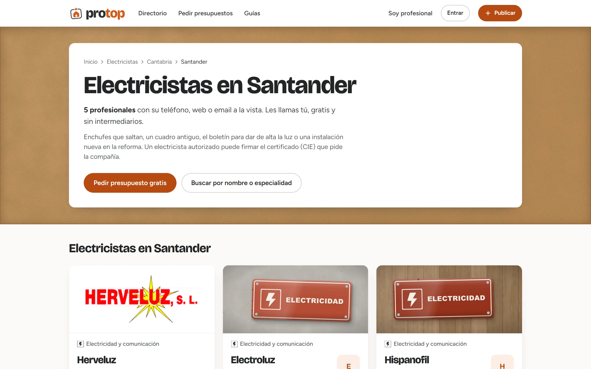
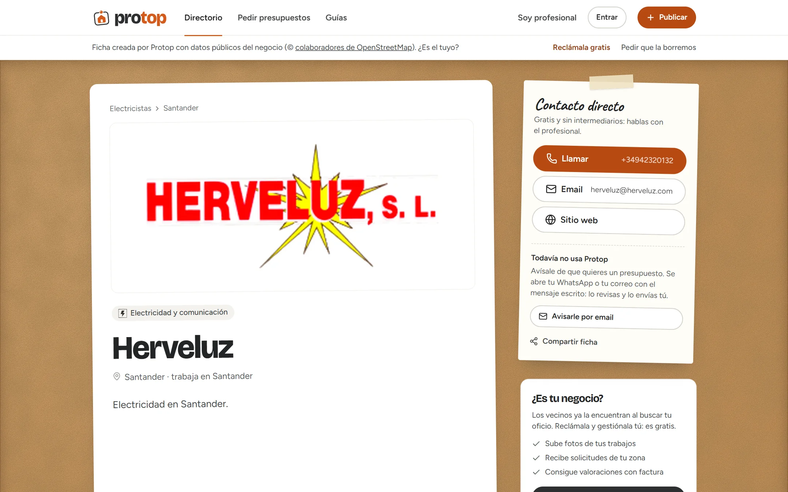
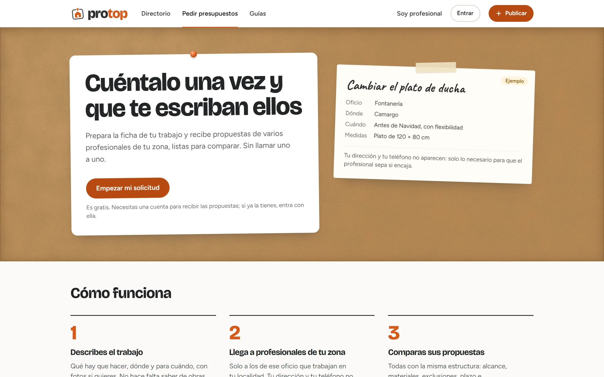
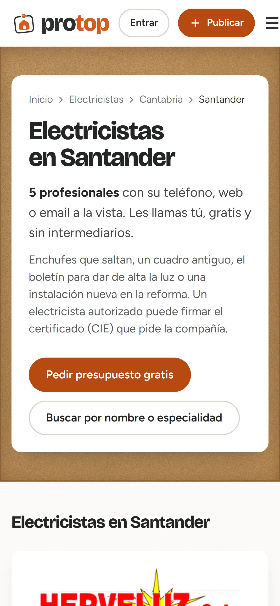
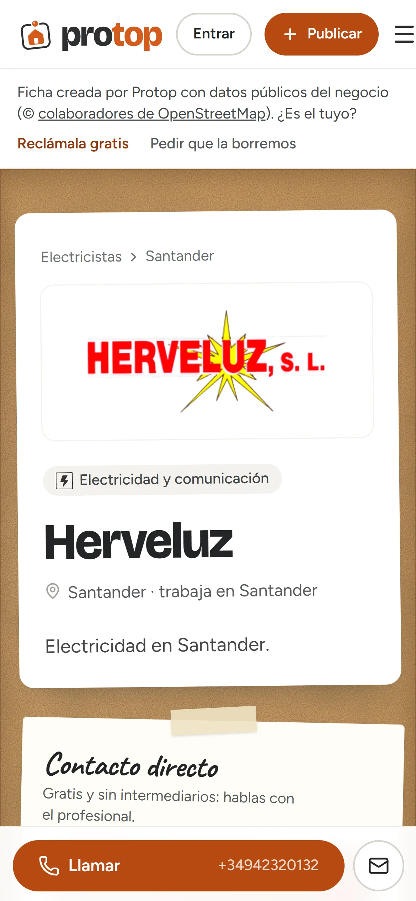

EL PRODUCTO
En Obramat, donde trabajo, hay un tablón de corcho en el que los profesionales de reformas clavan su tarjeta. Funciona, pero solo lo ve quien pasa por la tienda, y nadie sabe si ese profesional trabaja bien. Protop lleva ese tablón a internet: cada profesional tiene su ficha con oficio, zona y trabajos; el particular busca por oficio y localidad o cuenta su obra una sola vez y recibe propuestas; y la reputación se construye con valoraciones que solo se publican si el cliente enseña la factura. Lo he concebido, diseñado y programado yo solo, de la marca al modelo de datos.
INFRAESTRUCTURA TÉCNICA
- FRONT-END: React 19 y TypeScript con Vite, TanStack Query y Tailwind CSS 4 con los tokens de la marca.
- BACKEND: Supabase: Postgres con RLS, Auth, Storage privado para facturas y funciones SQL para la lógica sensible.
- SEO: renderizado en el servidor durante el build: cada página pública sale como HTML con su título, Open Graph, canónica y JSON-LD.
- ENTREGA: GitHub Actions compila, prerenderiza, genera el sitemap y publica en Hostinger por FTPS.
01 / DIRECTORIO NACIONAL
1.219 profesionales desde el primer día
Un directorio vacío no le sirve a nadie. Protop arranca con fichas creadas a partir de datos públicos de OpenStreetMap, revisadas desde un panel de administración, y cada negocio puede reclamar la suya o pedir que se borre.
- Fichas sin reclamar: se crean con una función SQL que exige indicar la fuente, y se muestran con el aviso «Ficha creada con datos públicos del negocio. ¿Es el tuyo?».
- Reclamar: si el email confirmado de la cuenta coincide con el de la ficha, se asigna sola; si no, pasa a revisión.
- Baja sin cuenta: cualquier negocio puede pedir que se elimine su ficha sin registrarse.

// Pantalla: página de oficio y localidad, con su contenido propio.
02 / CONFIANZA VERIFICABLE
Valoraciones que no se pueden inventar
Las reseñas de internet se compran. En Protop, para valorar a un profesional hay que subir la factura del trabajo, y la valoración solo se publica cuando un administrador la ha revisado.
- Facturas privadas: se guardan en un bucket privado al que solo accede administración, con enlaces firmados que caducan a los 5 minutos.
- Reputación automática: un trigger en Postgres recalcula la puntuación del profesional cuando se aprueba una valoración.
- Campos blindados: permisos por columna para que el dueño de una ficha edite sus datos, pero nunca su puntuación, sus distintivos ni su posición destacada.

// Pantalla: ficha de profesional con contacto directo y sin intermediarios.
03 / FLUJO PRINCIPAL
Cuéntalo una vez y que te escriban ellos
El particular describe su obra una sola vez. La solicitud llega a los profesionales que trabajan ese oficio en esa zona, que responden con su propuesta, y el particular las compara en un solo sitio.
- Reglas en la base de datos: quién ve cada solicitud y cada propuesta lo decide RLS en Postgres, no la interfaz.
- Gratis para el particular: sin comisiones por trabajo. El modelo de negocio es un plan destacado por oficio para profesionales, preparado y apagado hasta que haya tráfico.
- Legal: el aviso a un negocio que aún no está en Protop lo envía el propio particular desde su WhatsApp o email, nunca Protop, para cumplir la LSSI.

// Pantalla: la solicitud de presupuesto, clavada en el tablón.
04 / MOBILE FIRST
Para quien tiene la obra delante
Quien busca un fontanero suele hacerlo desde el móvil y con prisa. Las fichas llevan el botón de llamar fijo abajo, el buscador entiende «cerca de mí» con la ubicación del teléfono y cada página carga ya pintada desde el HTML prerenderizado.

// Portada

// Oficio y localidad

// Ficha
05 / SEO E INGENIERÍA DE ENTREGA
Una SPA que Google lee como una web estática
Protop es una aplicación de React, pero Google necesita HTML. En el build, el mismo código se renderiza en el servidor para cada oficio, cada localidad y cada ficha pública: 1.608 páginas con su contenido, su título y sus datos estructurados. En el navegador, React toma el control y todo sigue funcionando como una app.
Push a main lanza el flujo de GitHub Actions.
Compila la app y la versión de servidor.
HTML por oficio, localidad y ficha, más el sitemap.
El .htaccess sirve cada página antes que la app.
06 / ARQUITECTURA
Cómo encajan las piezas
- 26migraciones SQL
- 20tablas
- 70políticas RLS
- 1.608páginas prerenderizadas
- TypeScripten todo el front
Navegadorlo que recibe el usuario
Builddonde nace el SEO
Supabasedatos y reglas
Entregadel commit a producción
// Decisiones técnicas y por qué
MINIMO_FICHAS_PARA_INDEXAR).security definer.07 / EN EL CÓDIGO
Fragmentos reales del repositorio
Prerender: SEO sin cambiar de framework
Después del build, el script importa la versión de servidor de la app y la renderiza para cada ruta: páginas fijas, una por oficio, cada oficio en cada lugar que merece página y cada ficha real. El resultado se inyecta en la plantilla con su <head> completo.
const { render, RUTAS_ESTATICAS, OFICIOS_SEO, lugarIndexable } = await import(
pathToFileURL(ruta('dist-servidor/entry-servidor.js')).href
)
// Páginas con datos de Supabase: el directorio, una por oficio y cada ficha real.
// Si Supabase falla en una, esa ruta se queda como SPA: nunca hace fallar el build.
const conDatos = ['/profesionales', ...OFICIOS_SEO.map((oficio) => `/${oficio.url}`)]
for (const oficio of OFICIOS_SEO) {
for (const lugar of Object.keys(indice?.oficios[oficio.categoria]?.lugares ?? {})) {
if (lugarIndexable(indice, oficio.categoria, lugar)) conDatos.push(`/${oficio.url}/${lugar}`)
}
}
try {
const fichas = await consultarTodo(leerEnv(), 'profesionales', 'select=slug&es_demo=eq.false')
conDatos.push(...fichas.map((ficha) => `/profesionales/${ficha.slug}`))
} catch (error) {
console.warn(`prerender: sin la lista de fichas (${error.message}); se quedan como SPA.`)
}Campos blindados y reputación automática
El dueño de una ficha puede editar sus datos, pero Postgres solo le concede permiso sobre esas columnas: la puntuación, los distintivos y la posición destacada quedan fuera. La reputación la recalcula un trigger cada vez que se aprueba, cambia o borra una valoración.
-- El dueño de una ficha solo puede escribir los campos de su ficha.
revoke insert, update on table profesionales from anon, authenticated;
grant update (
nombre_comercial, categoria_id, especialidades, localidad,
descripcion_breve, descripcion, foto_perfil_url, fotos_trabajos, contacto
) on table profesionales to authenticated;
-- …_valoraciones_y_facturas.sql
create trigger valoraciones_recalcular
after insert or update or delete on valoraciones
for each row execute function public.trg_valoraciones_recalcular();RESUMEN DEL IMPACTO
Protop nace de algo que veo cada día en la tienda donde trabajo y lo convierte en un producto completo: directorio nacional con datos abiertos, un flujo de presupuestos con las reglas de acceso en la base de datos, valoraciones verificadas por factura y SEO técnico a escala de miles de páginas. Muestra cómo trabajo: detectar un problema real, entender a las dos partes (quien busca y quien ofrece) y llevarlo hasta algo que funciona.